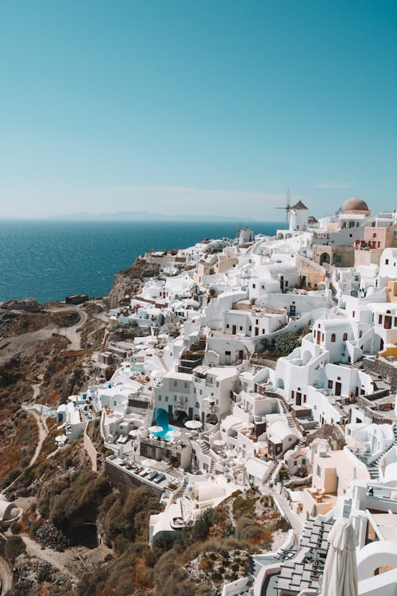

Recommedations on the places that can be visitedMajor European Cities
Paris, France – Known for its architecture, museums, and cultural heritage.
Rome, Italy – Offers exceptional historical sites, classical art, and renowned cuisine.
London, United Kingdom – A global center for arts, history, and diverse urban experiences.
Barcelona, Spain – Noted for its modernist architecture, Mediterranean setting, and vibrant street life.
Amsterdam, Netherlands – Appreciated for its canals, cycling culture, and relaxed atmosphere.
Natural Landscapes and Scenic Regions
Swiss Alps, Switzerland – Ideal for hiking, skiing, and panoramic mountain views.
Plitvice Lakes National Park, Croatia – Known for its interconnected lakes and waterfalls.
Norwegian Fjords, Norway – Dramatic coastal scenery, offering cruises and outdoor activities.
Azores, Portugal – Volcanic islands with lakes, hot springs, and marine wildlife.
Scottish Highlands, United Kingdom – Characterized by rugged landscapes, castles, and historic sites.Historic Towns and Cultural Destinations
Bruges, Belgium – A well-preserved medieval town known for its canals and architecture.
Hallstatt, Austria – A lakeside village with striking alpine scenery.
Santorini, Greece – Recognized for its distinctive architecture and views over the caldera.
Dubrovnik, Croatia – A fortified coastal city with a rich maritime history.
Copenhagen, Denmark – Known for its design culture, historic districts, and quality of life.Food and Wine Regions
Tuscany, Italy – Offers vineyards, traditional cuisine, and significant Renaissance heritage.
Lyon, France – Frequently considered the gastronomic capital of France.
San Sebastián, Spain – Distinguished by its culinary scene, including numerous Michelin-starred restaurants.
Porto, Portugal – Renowned for its wine cellars and historic riverside neighborhoods.Lesser-Known Destinations
Tallinn, Estonia – Features a well-preserved medieval Old Town and a growing modern tech scene.
Ljubljana, Slovenia – A compact, green capital with a relaxed, welcoming atmosphere.
Mostar, Bosnia and Herzegovina – Known for its Ottoman-era architecture and the iconic Stari Most bridge.
Riga, Latvia – Offers impressive Art Nouveau buildings and a vibrant cultural scene.
|

|